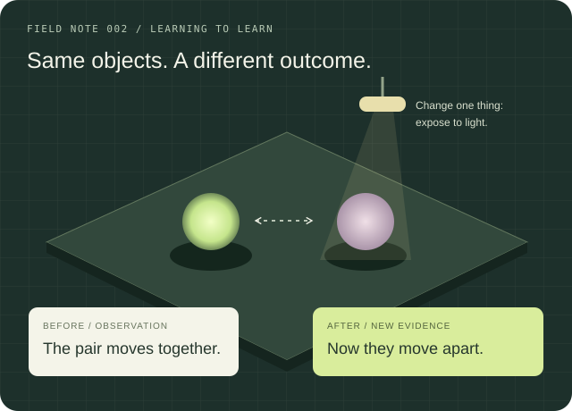
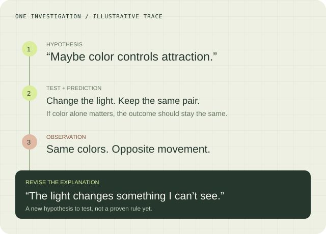
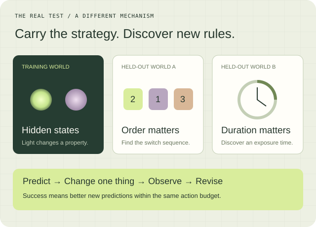

Watch what changes.
The world reveals movement and other allowed observations. The experimenter knows the underlying state; the learner does not.
RESEARCH 002 / LEARNING TO LEARN
Can we teach AI better ways to acquire knowledge? We want to study how people explore, test ideas, and revise explanations—and whether models can learn strategies that work in new situations.
Imagine a tabletop of floating objects. Some attract; others repel. Light changes their behavior. You can move objects, release them, and choose what to test. The challenge: discover enough to make a new pair meet without touching them.
Can a learner choose experiments that reveal the mechanism instead of relying on repeated guesses?

THE EXPERIMENT DESIGN / RULES HIDDEN FROM THE LEARNER
In this first proposed world, objects have two hidden states. Matching states repel; different states attract. Passing through a particular light flips the state. Visible color is unrelated. These are invented rules, not a model of real physics.
The world reveals movement and other allowed observations. The experimenter knows the underlying state; the learner does not.
Separate a pair, change its exposure, or repeat a trial. Every action uses part of the same limited experiment budget.
At selected checkpoints, record an expected outcome and confidence before revealing the result.
“Maybe it’s the colors.” A good experiment can challenge that explanation. We would record what the person expected, what they changed, what happened, and how they revised their hypothesis.
Does training on checked investigation histories improve experiment choice and evidence-based revision?

THE DATASET / HUMAN INVESTIGATION TRACES
A record links the evidence available at that moment, a prediction, an intervention, the observed outcome, and any revised explanation. The simulator supplies exact outcomes; people supply their own decisions and reports of uncertainty.
Use occasional prediction prompts and a final explanation. Compare with unprompted sessions so the study can measure how prompts change behavior.
Give agents structured observations and actions first. Add a visual condition later, without exposing hidden state through labels or descriptions.
Fine-tune an open model on selected traces. Keep failed attempts for analysis; human choices are not automatically optimal.
A model that memorizes the light rule has learned one world. To test learning to learn, hold out entire mechanisms: sequence-dependent switches, duration thresholds, or distance effects. New colors alone are not enough.
Against the untuned model, random exploration, and a one-variable-at-a-time strategy, does it make better predictions and reach new goals in fewer experiments?

FIRST MILESTONE
Build one clear environment, run a small human pilot, and establish model baselines before fine-tuning. Evaluate on held-out worlds with equal information and action budgets.
THE OTHER SIDE OF EXPERIENCE